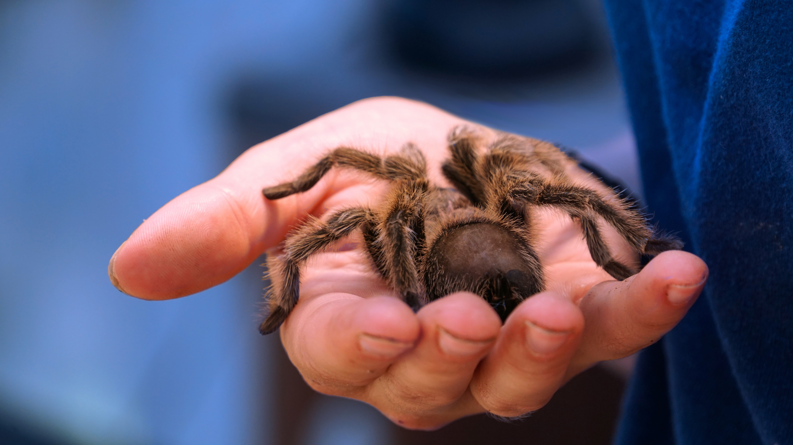

Penguins

Penguins are amazing creature that are design to surivive and thrive in the Ocean. From the countershading used in their feathers to being one of the most streamlined animals in the world, these fligtless birds and some of the most fearsome hunters in the ocean. These birds have survived for centuries in the harsh South pole, but if we don't do something soon these creatures may soon go extinct. As a pet, these birds are 0/10 as you can not own one, but as predetors and creatures in general 10/10.
More about Penguins Index
Tarantulas

Tarantulas are gentle giants, spiders the size of your hand with bites that do notheing to a human. However, if you are anything between a bird and a fly, you will find these insects to be cunning hunters, laying traps to catch their prey. These burrowing spiders may not weave intricate webs, but rather burrows, supported by their webs. Unlike Penguins these creatures can be owned as pets, or something to scare your friends with arachnophobia. As a owner of one of these bugs, I can confidently say that tarantulas are a get pet for those with little space and little money. Caring for a tarantula requires only water every couple days and live crickets every 4 to 5 days. As a pet, these easy to care for spiders are 10/10, and as predetors, these arachnids get a 8/10. More about Tarantulas